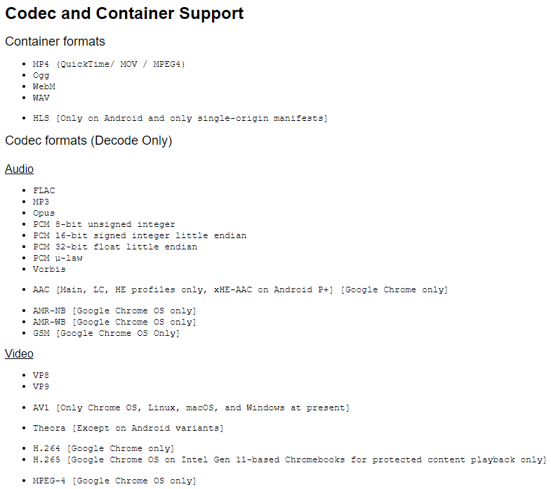
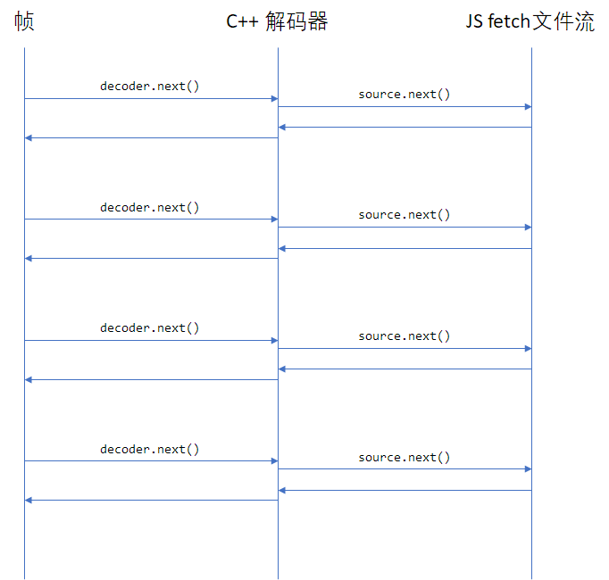
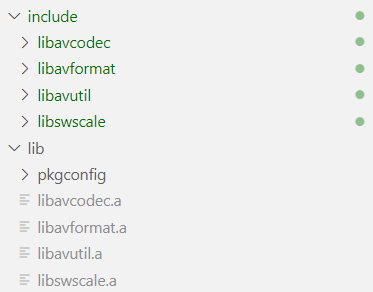

前端通过 ffmpeg 库播放视频
仓库地址：https://github.com/hamflx/ffmpeg-fe
先看一下 chrome 支持的视频格式与解码器：

其中 H.265 并不在一般的 Chrome 上支持，有时候我们需要播放一些不常用的格式，那么我们就可以将 ffmpeg 库编译为 WebAssembly 以支持这些格式。
ffmpeg 是一个音视频处理的通用库，我们需要用 C++ 写一个调用 ffmpeg 的解码程序，该程序与 JS 进行通信，取得视频数据，并调用 ffmpeg 解码，将解码后的程序送给 JS，由 JS 调用 WebGL 渲染。
我这里以流的形式来取视频数据、解码，在播放器一侧在 requestAnimationFrame 中拉取视频数据：

构建 ffmpeg 库
首先需要把 ffmpeg 编译成几个库，后续我们的 C++ 解码程序就可以调用这个库里的方法，构建命令：
CPPFLAGS="-D_POSIX_C_SOURCE=200112 -D_XOPEN_SOURCE=600" \
emconfigure ./configure \
--prefix=$(pwd)/lib \
--cc="emcc" \
--cxx="em++" \
--ar="emar" \
--ranlib="emranlib" \
--target-os=none \
--enable-cross-compile \
--enable-lto \
--cpu=generic \
--arch=x86_64 \
--disable-asm \
--disable-inline-asm \
--disable-programs \
--disable-avdevice \
--disable-doc \
--disable-swresample \
--disable-postproc \
--disable-avfilter \
--disable-pthreads \
--disable-w32threads \
--disable-os2threads \
--disable-network \
--disable-logging \
--disable-everything \
--enable-gpl \
--enable-version3 \
--enable-static \
--enable-demuxers \
--enable-parsers \
--enable-decoder=pcm_mulaw \
--enable-decoder=pcm_alaw \
--enable-decoder=adpcm_ima_smjpeg \
--enable-protocol=file \
--enable-protocol=pipe \
--enable-decoder=h264 \
--enable-decoder=hevc
make && make install
以上构建命令成功后，将会得到下面的文件：

编写解码程序
通过 ffmpeg 的自定义流，来实现一个 read_packet 方法，该方法内部调用 js 的异步方法取得视频流，以此作为输入。程序主循环中不断尝试调用 avcodec_receive_frame 解码，当数据不足时，通过 av_read_frame 和 avcodec_send_packet 将数据发送给 ffmpeg 的解码器。
自定义输入流如下：
int nBufferSize = 32768;
unsigned char *pReadBuffer = (unsigned char*)av_malloc(nBufferSize);
if (pReadBuffer == NULL)
{
return DECODER_ERROR::AV_ERROR;
}
AVIOContext *pIoCtx = avio_alloc_context(pReadBuffer, nBufferSize, 0, (void*)this, DecoderReadPacket, NULL, NULL);
if (pIoCtx == NULL)
{
return DECODER_ERROR::AV_ERROR;
}
m_pFmtCtx = avformat_alloc_context();
m_pFmtCtx->pb = pIoCtx;
m_pFmtCtx->flags = AVFMT_FLAG_CUSTOM_IO;
int ret;
while ((ret = avformat_open_input(&m_pFmtCtx, NULL, NULL, NULL)) == AVERROR(EAGAIN))
{
}
if (ret)
{
return DECODER_ERROR::AV_ERROR;
}
int Decoder::ReadPacket(void *opaque, uint8_t*buf, int buf_size)
{
emscripten::val packet = m_jsUpstream.call<emscripten::val>("next", buf_size).await();
emscripten::val data = packet["data"];
emscripten::val done = packet["done"];
if (done.as<bool>())
{
return 0;
}
const auto nPacketLength = data["length"].as<unsigned>();
if (nPacketLength > buf_size)
{
printf("==> nPacketLength > buf_size\n");
}
emscripten::val memoryView{emscripten::typed_memory_view(nPacketLength, buf)};
memoryView.call<void>("set", data.call<emscripten::val>("slice", 0, nPacketLength));
return nPacketLength;
}
程序主循环解码（其实是在 JS 里调用 Next 到 C++ 的）如下：
while ((ret = avcodec_receive_frame(m_pCodecCtx, m_pFrame)) == AVERROR(EAGAIN))
{
while (1)
{
ret = av_read_frame(m_pFmtCtx, m_pPacketFrame);
if (ret == 0)
{
if (m_pPacketFrame->stream_index == m_iVideoStream)
{
break;
}
av_packet_unref(m_pPacketFrame);
continue;
}
printf("==> av_read_frame error: %s\n", av_err2str(ret));
av_packet_unref(m_pPacketFrame);
if (ret == AVERROR_EOF)
{
result.set("status", (int)DECODER_ERROR::END_OF_FILE);
return result;
}
if (ret != 0)
{
printf("av_read_frame failed: %s\n", av_err2str(ret));
result.set("status", (int)DECODER_ERROR::AV_READ_FRAME);
return result;
}
}
ret = avcodec_send_packet(m_pCodecCtx, m_pPacketFrame);
av_packet_unref(m_pPacketFrame);
if (ret != 0)
{
printf("==> avcodec_send_packet error: %s\n", av_err2str(ret));
result.set("status", (int)DECODER_ERROR::AVCODEC_SEND_PACKET);
return result;
}
}
Makefile
all: ../web/ff.js
rebuild: clean all
CC = emcc
CFLAGS = -O3 -I../lib/include
LIBOBJS := ../lib/lib/libavcodec.a ../lib/lib/libavutil.a ../lib/lib/libavformat.a
EMCCFLAGS = -gsource-map -g --bind -s ASYNCIFY -s WASM=1 -s ALLOW_TABLE_GROWTH=1 -s ALLOW_MEMORY_GROWTH=1 -s FILESYSTEM=0 -s ASSERTIONS=1
../web/ff.js: ff.cpp $(LIBOBJS)
$(CC) $(EMCCFLAGS) $(CFLAGS) -o $@ $^
fflib: build-ffmpeg.sh
sh build-ffmpeg.sh
clean:
rm -f ff.js ff.wasm
web 端
首先要实现一个视频来源对象，主要逻辑就是在调用 next 方法时，将视频数据返回，同时，如果数据太多，就先缓存着：
async function beginReadPacket() {
let cachedSize = 0
/**
* @type {Uint8Array[]}
*/
const cachedChunks = []
const reader = (await fetch('test.mkv')).body.getReader()
const combineChunks = size => {
let resultSize = 0
const result = new Uint8Array(size)
while (resultSize < size) {
const chunk = cachedChunks.shift()
if (chunk.length + resultSize > size) {
const needSize = size - resultSize
result.set(chunk.slice(0, needSize), resultSize)
resultSize += needSize
cachedChunks.unshift(chunk.slice(needSize))
break
} else {
result.set(chunk, resultSize)
resultSize += chunk.length
}
}
cachedSize -= result.length
return result
}
return async size => {
while (cachedSize < size) {
const { done, value } = await reader.read()
if (done) {
if (!cachedSize) return { done }
return { data: combineChunks(cachedSize) }
}
cachedChunks.push(value)
cachedSize += value.length
}
return { data: combineChunks(size) }
}
}
然后就是在 requestAnimationFrame 中调用 decoder.next 来拉去视频帧了，就不写了。当然，最后还有一步是拿解码后的 YUV 数据丢给 WebGL 渲染，具体就不展开了。
问题
虽然最开始是因为 H.265 无法播放，才去做这个东西的，但是吧，做完之后发现，就这样还真不一定能播放 mp4 封装的 H.265 视频。
对于 mp4 格式的文件信息 moov box 有可能是在文件最后的，我这里实现的方法是取视频流，一部分一部分的解码，就会导致取不到视频信息。所以对于这种视频文件，要么是把视频数据取完整了，一股脑塞进 ffmpeg 取识别，或者也可以把他的 moov box 放到前面，或者直接指定解码器参数也可以吧。
下面的命令将 mp4 视频的 moov box 放前面：
ffmpeg -i test.mkv -c:v libx265 -preset ultrafast -c:a copy -movflags faststart test.mp4